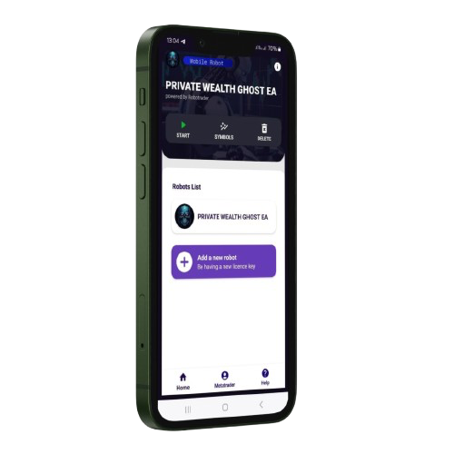

+65.9K
Tiktok Followers
+37.7K
Instagram Followers
We use a mobile robot that works on andorid phones and Pc

1200
2
Trade Pairs mt4 & mt5
Auto SL and TP
All Brokers
24/7 Live Chat Support
Platform Robotrader
Buy Now2 Accounts Connects
Trades Indices and Currency Includes Gold
Access to all features
Profit Trailing
PC –Windows/MacOS
Subscription Fee Buy NowTiktok Followers
Instagram Followers
What are PWG AND BMS ?
PWG AND BMS robots are unique automated devices created to help with cheese production, packaging, and even aging processes. They are designed to mimic artisanal methods while reducing human labor.
How do Private Wealth Ghost and Blue Memo Scalper PC robots work?
Private Wealth Ghost and Blue Memo Scalper PC robots are equipped with specialized sensors, temperature controls, and mechanical arms that handle the cheese with precision, ensuring consistent quality and flavor during production.
Are these robots easy to use for beginners?
Yes! These robots come with user-friendly interfaces and guides, making them suitable for both beginners and experienced Private Wealth Ghost and Blue Memo Scalper PC robots alike.
What kind of cheeses can the robots make?
Self-made cheese robots can create a variety of Private Wealth Ghost and Blue Memo Scalper PC robots. Each robot model may have different capabilities, so be sure to check the specifications.
Is it expensive to set up a cheese robot?
While the initial setup cost can be high, the efficiency and consistency provided by cheese robots can reduce long-term production costs, making it a worthwhile investment for many producers.